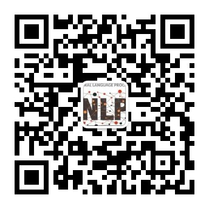

News
-
New Paper Released: "To Preserve or To Compress: An In-Depth Study of Connector Selection in Multimodal Large Language Models"
Authors: Junyan Lin, Haoran Chen, Dawei Zhu, Xiaoyu Shen
Paper | Code Repository
This study explores the impact of connectors on the performance of Multimodal Large Language Models (MLLMs), providing important guidance for MLLM architecture design. -
Research Highlight: "Fine-Tuning Large Language Models to Translate: Will a Touch of Noisy Data in Misaligned Languages Suffice?"
Authors: Dawei Zhu, Pinzhen Chen, Miaoran Zhang, Barry Haddow, Xiaoyu Shen, Dietrich Klakow
Paper | Code Repository
This study revisits the importance of training data factors in fine-tuning LLMs for translation, revealing surprising findings about data volume and translation direction requirements. -
Latest Publication: "The Accuracy Paradox in RLHF: When Better Reward Models Don't Yield Better Language Models"
Authors: Yanjun Chen, Dawei Zhu, Yirong Sun, Xinghao Chen, Wei Zhang, Xiaoyu Shen
Paper | Code Repository
This research reveals a surprising paradox in human feedback reinforcement learning, challenging the belief that stronger reward models always lead to better language model performance.
About us
We are the NLP group from Eastern Institute of Technology, Ningbo (EIT). Ningbo is a major port city and historical cultural center on China's southeastern coast. The institute is committed to gathering top global talent and aims to establish itself as a high-level, innovative, and international research university. Its goal is to become a world-class academic institution in the short term and lead the development of key strategic disciplines in the country. The institute promotes an academic environment of equality, openness, and freedom, with the ambition of becoming a nonprofit, cutting-edge research institution driving transformative research.
At the NLP group, we align with EIT’s mission to drive transformative research. Our work focuses on advancing natural language processing through innovative approaches that enable machines to deeply understand, generate, and reason with human language. We tackle diverse areas such as information retrieval, multi-modal learning, and chain-of-thought reasoning. A core objective is to develop highly efficient algorithms that deliver state-of-the-art performance while minimizing computational and resource demands. We prioritize reducing dependence on large-scale human annotation, speeding up training processes, and cutting down inference costs, ultimately aiming to create robust, resource-efficient models that are accessible and effective across a wide range of applications.
learn moreFor more updates, follow us on our official WeChat public account: EIT-NLP.
Github
Our lab focus on open science and will release our code, model and dataset at Visit our GitHub